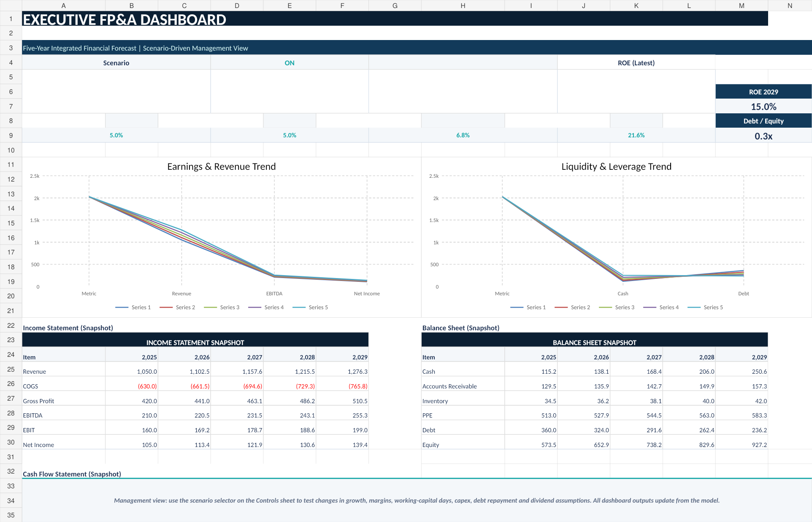
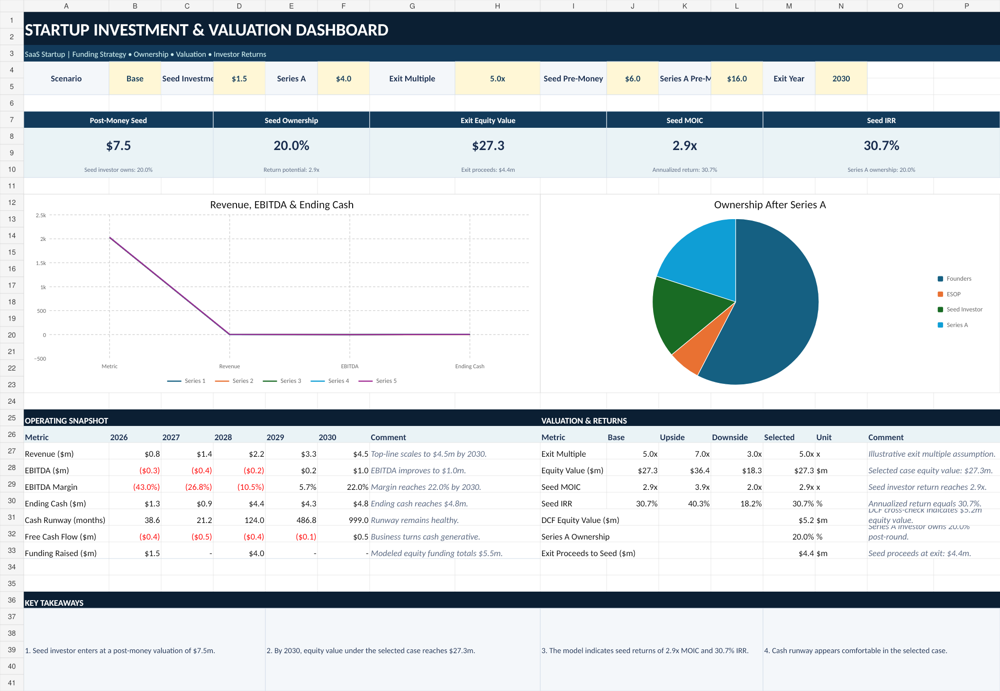

FP&A & Financial Planning
Integrated planning, rolling forecasts, scenario analysis and decision support.
FINANCIAL ADVISORY • FP&A • VALUATION
Practical finance solutions for startups, SMEs and growing businesses — from forecasting and financial modeling to valuation, reporting and business performance.
SERVICES
Flexible support designed around the questions management, founders and investors actually need answered.
Integrated planning, rolling forecasts, scenario analysis and decision support.
Three-statement, investment, cash-runway and bespoke decision models.
Driver-based budgets, forecast refreshes and variance analysis.
DCF, multiples, cap tables, dilution, MOIC and IRR analysis.
KPI packs, dashboards and concise management views that turn data into action.
Profitability, cost, working-capital and commercial analysis.
HOW WE WORK
Clarify the business model, priorities and decisions that matter.
Structure the data and identify the key performance drivers.
Create the model, forecast, dashboard or analysis required.
Turn outputs into clear recommendations and management actions.
SELECTED PORTFOLIO

Five-year forecast integrating the income statement, balance sheet and cash flow with scenario planning, KPI analysis and management insights.

Investor-focused model covering operating forecasts, funding, cap-table dilution, exit valuation, DCF, MOIC and IRR.

ABOUT FINUENCE
Finuence Advisory is an independent finance consulting practice focused on FP&A, financial modeling, valuation, forecasting, management reporting and business performance.
The approach combines financial analysis with commercial and operational context, helping founders and management teams understand not only what the numbers are, but what they mean for the next decision.
LET'S TALK
Discuss your forecasting, financial modeling, valuation or business performance needs.